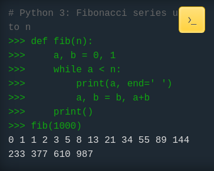

Intro to Python
AVAIL | 2024-07-17
with Brendan Coates (he|his)
About Me
gardener, technobabbler, LATU member
archivist specializing in workflow automation,
AV and Oral Histories
Agenda
Part 1
Intro, Setup, Basics
10am - 11am EDT
history, setup, modes, versions
modules and packages
functions, variables, errors, help
Part 2
Objects and Data Structures
11am-11:50pm EDT
data structures and types
pathlib module deep-dive
break
Part 3
Loops, Conditionals, Scripting
12pm - 1pm EDT
for loops
if statements
scripting
What is Python?
Brief History
initial development began 1989
first released in 1991
Python 2 retired in 2020
first released in 1991
Python 2 retired in 2020
Python Today
hugely popular language
especially for data science, ML/AI
does everything pretty well, if slowly
especially for data science, ML/AI
does everything pretty well, if slowly

Versioning
many versions of Python can coexist on 1 machinehigh-level development relies on virtual environments
not fun to manage tbh
Using Python
Invoking Python
Interpreter
a bash-like terminalcan't save
Script
runs pre-written code./script.py
Editing Python Code
you need a text editor, not WordMicrosoft VS Code hugely popular
Notepad++ less intimidating imo
Pycharm, neovim, etc...
Modules/ Packages
Python Ecosystem
Python Standard Librarypip (Install Packages)write/ publish your own pkgs with PyPI
Using Modules
import pathlibPython Basics
Printing pt1
display text/ info in terminaleasiest method of debugging
print("Hello, World")
Printing pt2
printing variables:print(var)print("%s", var)print(f"var")
Variables
human-readable pointers to values in RAMfname = "a123.wav"print(filename)
Functions p1
functions separate different tasks in a scriptdef foo():
Functions pt2
functions accept argumentsand return results
def foo(arg1, arg2): return arg1 + arg2
Errors pt1
mostly, when writing code, we get errorsthere's lots of different kinds
Errors pt2
some error types:TypeErrorValueErrorRuntimeErrorErrors pt3
the type of error can help debug the problem:FileNotFoundErrorImportErrorUnboundLocalError
Getting Help
module help pagesStack Overflow
Chat GPT
Objects & Data Structures
Objects
"object oriented programming language"Everything is an Object
string
unicode textenclosed in "quotes" or 'apostrophes'
number
I never said there would be no mathtwo basic number types:
integer:
42float:
42.0
conversions
you can convert between strings and numbers!foo = "5"bar = int(foo)type(bar)str(42.0)
list
ordered sequence of objects separated by commas['pres.wav', 'acc.mp3']
list
len()sort()set().append().extend()
dictionary
ordered sequence ofkey: value pairs
{"First Name": "Brendan","Last Name": "Coates"}
dictionary
.update().keys()
Pathlib
Pythonic Path Handling
abstracts the filesystemallows for easy path manipulation
Pathlib Basics
pathlib.Path()filepath.parent
filepath.name
filepath.suffix
Pathlib Advanced
filepath.exists()filepath.is_dir()
dirpath.glob()
Questions + Break
Loops, Ifs, Scripts
For Loops
loops over everything in an iterableFor Loops
for item in list:for key, value in dict.items():
Conditionals
if: thenseparates actions based on your rules
rules must be true|false
Conditionals
if filepath.exists():if not filepath.is_dir():
elif:
else: